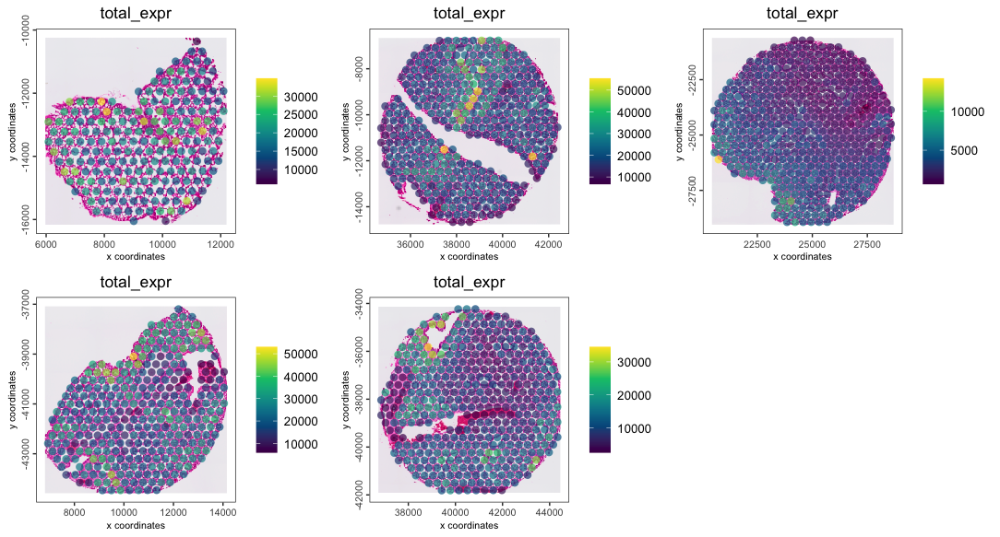

Tissue micrarrays (TMAs) are a good way of sampling several tissues in the same spatial assay.
This example demonstrates loading in the data, isolating individual TMA cores, and annotating with a 10x Visium mouse TMA dataset.
1 Check Giotto installation
# Ensure Giotto Suite is installed.
if(!"Giotto" %in% installed.packages()) {
pak::pkg_install("drieslab/Giotto")
}
# Ensure the Python environment for Giotto has been installed.
genv_exists <- Giotto::checkGiottoEnvironment()
if(!genv_exists){
# The following command need only be run once to install the Giotto environment.
Giotto::installGiottoEnvironment()
}2 Setup example TMA dataset
2.1 Download the Data
## provide path to a folder to save the example data to
data_path <- "/path/to/data/"
mat_link <- "https://cf.10xgenomics.com/samples/spatial-exp/2.0.1/CytAssist_11mm_FFPE_Mouse_TMA_3x3_2mm/CytAssist_11mm_FFPE_Mouse_TMA_3x3_2mm_filtered_feature_bc_matrix.h5"
spat_link <- "https://cf.10xgenomics.com/samples/spatial-exp/2.0.1/CytAssist_11mm_FFPE_Mouse_TMA_3x3_2mm/CytAssist_11mm_FFPE_Mouse_TMA_3x3_2mm_spatial.tar.gz"
mat_path <- file.path(data_path, "filtered_matrix.h5")
spat_path <- file.path(data_path, "spatial.tar.gz")
download.file(mat_link, destfile = mat_path)
download.file(spat_link, destfile = spat_path)
# untar the spatial folder
untar(spat_path, exdir = file.path(data_path))
spat_dir <- file.path(data_path, "spatial")2.2 Create Giotto Object
library(Giotto)
# 1. set working directory
results_folder <- "path/to/results"
# Optional: Specify a path to a Python executable within a conda or miniconda
# environment. If set to NULL (default), the Python executable within the previously
# installed Giotto environment will be used.
python_path <- NULL # alternatively, "/local/python/path/python" if desired.
instrs <- instructions(python_path = python_path, save_dir = results_folder)
tma <- createGiottoVisiumObject(
h5_visium_path = mat_path,
h5_tissue_positions_path = file.path(spat_dir, "tissue_positions.csv"),
h5_image_png_path = file.path(spat_dir, "tissue_hires_image.png"),
h5_json_scalefactors_path = file.path(spat_dir, "scalefactors_json.json"),
instructions = instrs
)
# plot the data
spatPlot2D(tma, show_image = TRUE, point_size = 1.5, point_alpha = 0.7)
2.3 Detect individual TMA cores
By building a spatial network, we can find out which data points are spatially contiguous by looking checking spatial distance, breaking ones that are too far away, and then checking for graph membership.
This functionality is implemented as identifyTMAcores(),
along with some additional steps that filter for minimal number of nodes
to be considered a core and identify and join together cores that show
up as two or more separate pieces of tissue.
# create a default delaunay spatial network
tma <- createSpatialNetwork(tma)
tma <- identifyTMAcores(tma)
spatPlot2D(tma,
show_image = TRUE,
cell_color = "core_id",
point_size = 1.5,
point_alpha = 0.7
)
The cores have been assigned numerical IDs. There is also a
"not_connected" group which are too small to be considered
a spatial region and not connected to a larger group of data points.
We can also now add the core annotations from the 10X dataset description
# also add the core annotations from the 10x dataset description
tma <- annotateGiotto(tma,
name = "sample",
cluster_column = "core_id",
annotation_vector = c(
"1" = "lung1",
"2" = "brain2",
"3" = "brain3",
"4" = "lung5",
"5" = "brain1",
"6" = "brain4",
"7" = "lung4",
"8" = "lung3",
"9" = "lung2",
"not_connected" = "not_connected"
)
)
spatPlot2D(tma,
show_image = TRUE,
cell_color = "sample",
point_size = 1.5,
point_alpha = 1
)
3 Reorganize Object by Tissue Type (optional)
This particular dataset contains two types of tissues (lung and brain). It can be helpful to analyze these in separate expression spaces.
3.1 Split Giotto Object
A split operation will split a single giotto object into
a list of several based on a cell metadata column defined by the
by param. Here we split by the newly added
"sample" annotation that tells us what tissue the core is
from.
object_list <- splitGiotto(tma, by = "sample")
length(object_list)[1] 10
names(object_list) [1] "lung1" "brain2" "brain3" "lung5" "brain1"
[6] "brain4" "lung4" "lung3" "not_connected" "lung2" 3.2 Join Similar Tissue Types
Next we join together the giotto objects containing
cores with similar tissue types, finishing the reorganization of the
analysis objects.
lung_reps <- object_list[c("lung1", "lung2", "lung3", "lung4", "lung5")]
brain_reps <- object_list[c("brain1", "brain2", "brain3", "brain4")]
lung <- joinGiottoObjects(
gobject_list = lung_reps,
gobject_names = names(lung_reps),
join_method = "no_change"
)
lung <- addStatistics(lung, expression_values = "raw")
spatPlot2D(lung,
cell_color = "total_expr",
color_as_factor = FALSE,
gradient_style = "sequential",
group_by = "sample",
point_size = 3,
point_border_stroke = 0,
point_alpha = 0.7,
show_image = TRUE
)
brain <- joinGiottoObjects(
gobject_list = brain_reps,
gobject_names = names(brain_reps),
join_method = "no_change"
)
brain <- addStatistics(brain, expression_values = "raw")
spatPlot2D(brain,
cell_color = "total_expr",
color_as_factor = FALSE,
gradient_style = "sequential",
group_by = "sample",
point_size = 3,
point_border_stroke = 0,
point_alpha = 0.7,
show_image = TRUE
)
The datasets are now organized into the two multi-sample
giotto objects lung and brain.
Downstream analyses can now continue on these two sets of data
independently.
Note that these objects were joined without integration, so a good first step would be to cluster the datasets and check for inter-core batch effects, and then proceed with integration if necessary.
4 Session Info
R version 4.4.1 (2024-06-14)
Platform: aarch64-apple-darwin20
Running under: macOS 15.0.1
Matrix products: default
BLAS: /System/Library/Frameworks/Accelerate.framework/Versions/A/Frameworks/vecLib.framework/Versions/A/libBLAS.dylib
LAPACK: /Library/Frameworks/R.framework/Versions/4.4-arm64/Resources/lib/libRlapack.dylib; LAPACK version 3.12.0
locale:
[1] en_US.UTF-8/en_US.UTF-8/en_US.UTF-8/C/en_US.UTF-8/en_US.UTF-8
time zone: America/New_York
tzcode source: internal
attached base packages:
[1] stats graphics grDevices utils datasets methods base
other attached packages:
[1] Giotto_4.1.3 GiottoClass_0.4.1
loaded via a namespace (and not attached):
[1] colorRamp2_0.1.0 deldir_2.0-4 gridExtra_2.3
[4] rlang_1.1.4 magrittr_2.0.3 GiottoUtils_0.2.0
[7] matrixStats_1.4.1 compiler_4.4.1 png_0.1-8
[10] vctrs_0.6.5 hdf5r_1.3.10 pkgconfig_2.0.3
[13] SpatialExperiment_1.14.0 crayon_1.5.3 fastmap_1.2.0
[16] backports_1.5.0 magick_2.8.4 XVector_0.44.0
[19] labeling_0.4.3 ggraph_2.2.1 utf8_1.2.4
[22] rmarkdown_2.28 UCSC.utils_1.0.0 bit_4.5.0
[25] purrr_1.0.2 xfun_0.47 zlibbioc_1.50.0
[28] cachem_1.1.0 beachmat_2.20.0 GenomeInfoDb_1.40.0
[31] jsonlite_1.8.9 DelayedArray_0.30.0 tweenr_2.0.3
[34] BiocParallel_1.38.0 terra_1.7-78 irlba_2.3.5.1
[37] parallel_4.4.1 R6_2.5.1 RColorBrewer_1.1-3
[40] reticulate_1.39.0 pkgload_1.3.4 GenomicRanges_1.56.0
[43] scattermore_1.2 Rcpp_1.0.13 SummarizedExperiment_1.34.0
[46] knitr_1.48 IRanges_2.38.0 Matrix_1.7-0
[49] igraph_2.0.3 tidyselect_1.2.1 viridis_0.6.5
[52] rstudioapi_0.16.0 abind_1.4-8 yaml_2.3.10
[55] codetools_0.2-20 pkgbuild_1.4.4 lattice_0.22-6
[58] tibble_3.2.1 Biobase_2.64.0 withr_3.0.1
[61] evaluate_1.0.0 desc_1.4.3 polyclip_1.10-7
[64] xml2_1.3.6 pillar_1.9.0 MatrixGenerics_1.16.0
[67] whisker_0.4.1 checkmate_2.3.2 stats4_4.4.1
[70] plotly_4.10.4 generics_0.1.3 dbscan_1.2-0
[73] rprojroot_2.0.4 S4Vectors_0.42.0 ggplot2_3.5.1
[76] sparseMatrixStats_1.16.0 munsell_0.5.1 scales_1.3.0
[79] GiottoData_0.2.15 gtools_3.9.5 glue_1.8.0
[82] lazyeval_0.2.2 tools_4.4.1 GiottoVisuals_0.2.6
[85] data.table_1.16.0 ScaledMatrix_1.12.0 graphlayouts_1.1.1
[88] fs_1.6.4 tidygraph_1.3.1 cowplot_1.1.3
[91] grid_4.4.1 tidyr_1.3.1 colorspace_2.1-1
[94] SingleCellExperiment_1.26.0 GenomeInfoDbData_1.2.12 ggforce_0.4.2
[97] BiocSingular_1.20.0 cli_3.6.3 rsvd_1.0.5
[100] fansi_1.0.6 S4Arrays_1.4.0 viridisLite_0.4.2
[103] dplyr_1.1.4 uwot_0.2.2 downlit_0.4.4
[106] gtable_0.3.5 digest_0.6.37 BiocGenerics_0.50.0
[109] SparseArray_1.4.1 ggrepel_0.9.6 farver_2.1.2
[112] rjson_0.2.21 htmlwidgets_1.6.4 memoise_2.0.1
[115] htmltools_0.5.8.1 pkgdown_2.1.0 lifecycle_1.0.4
[118] httr_1.4.7 bit64_4.5.2 MASS_7.3-60.2